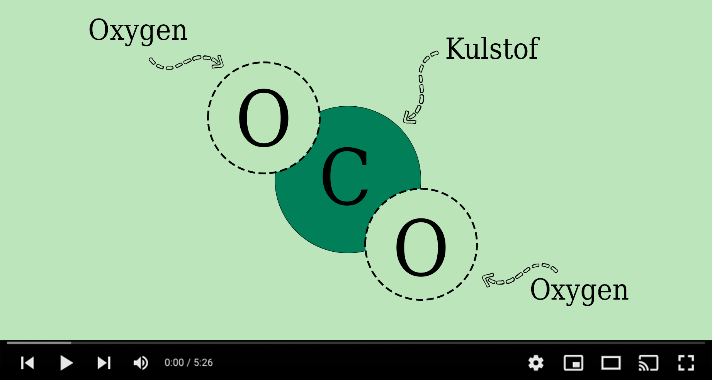

Forklaringsvideo
Se nedenstående video for at få en bedre forståelse for hvad CO2 er og hvordan CO2-udledningen påvirker vores klima.
Hvad er CO2?
CO2 CO2, også kaldet kuldioxid, er en luftart som findes i atmosfæren og udledes blandt andet når vi trækker vejret. CO2 er uundværlig for økosystemet, da træer og planter skal bruge dette for at kunne gro. Planter og træer omdanner kuldioxid til ilt og det er ikke muligt for mennesket at få ilt, hvis ikke der er nok CO2 i luften. Problemet opstår dog først når der er for meget CO2 i atmosfæren.
Udledning af CO2 Udledningen af CO2 sker også når vi afbrænder fossile brændstoffer, for eksempel kul og olie eller naturgasser, når vi skal lave strøm og varme. De sidste par hundrede år er udledningen af CO2 steget enormt i takt med et større forbrug hos os mennesker. Konsekvensen af dette er, at mængden af CO2 i atmosfæren er blevet meget høj.
Drivhuseffekten Når mængden af CO2 stiger i atmosfæren, bliver jorden varmere på grund af drivhuseffekten. Kuldioxid lægger sig rundt om jorden og holder på varmen. Solens stråler rammer jorden og en del af dette lys og varme, bliver kastet tilbage i rummet. Derfor gælder det, at jo mere CO2 der er i atmosfæren, des sværere har solens stråler ved at komme igennem atmosfæren og ud i rummet. Dette medfører højere temperaturer og er det der kaldes global opvarmning. Den globale opvarmning spiller en stor rolle når det kommer til klimaforandringer.